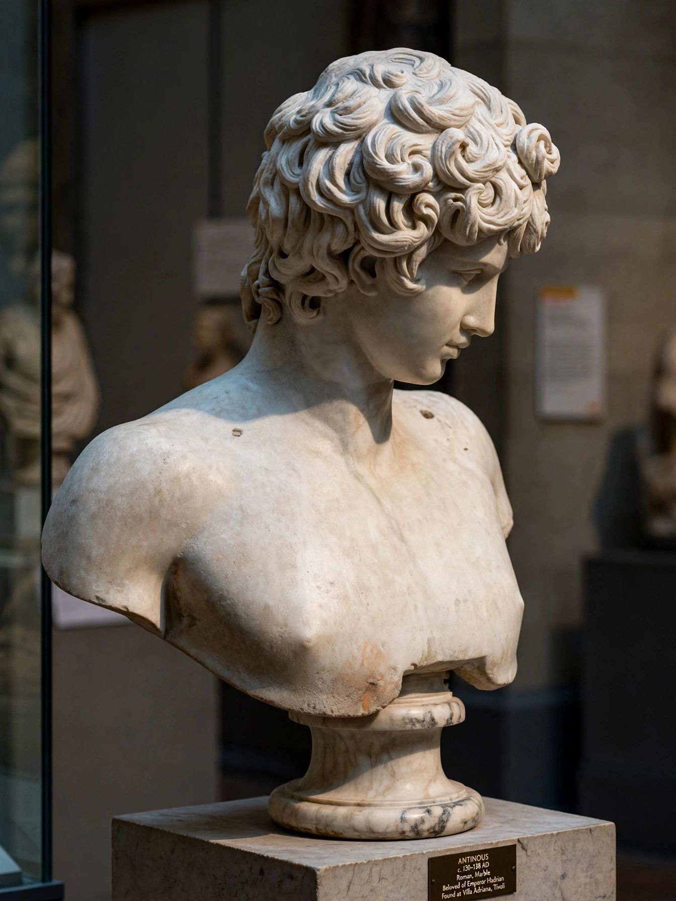

Antinous
| Antinous | |
|---|---|
| Born | c. 111 Claudiopolis, Bithynia (modern Bolu, Turkey) |
| Died | before 30 October 130 (aged ~18–19) River Nile, Egypt |
| Known for | Companion of Emperor Hadrian; deified after death |

Antinous (Greek: Ἀντίνοος; c. 111 – before 30 October 130) was a young man of great beauty from Bithynia in northwestern Asia Minor who became the beloved companion of the Roman emperor Hadrian. After Antinous drowned in the River Nile in Egypt in 130, the grieving Hadrian deified him, founded the city of Antinoöpolis near the place of his death, and promoted a cult of Antinous across the empire. More sculptures survive of Antinous than of almost any other figure of antiquity, and his image became an enduring ideal of youthful male beauty.
Life
Little is known with certainty of Antinous's origins. He was born near Claudiopolis in Bithynia, probably to a Greek family of modest means. He may first have come to Hadrian's attention in 123, when the emperor passed through Bithynia, and joined the imperial court, possibly being educated in Rome. From about 128 he accompanied Hadrian on his travels through the empire — Greece, Asia Minor, Syria and Egypt. Ancient sources describe the relationship in terms of the Greek pederastic tradition of erastes and eromenos, though its exact nature was debated already in antiquity.
Death and deification
In October 130, during the imperial party's voyage up the Nile, Antinous drowned. Hadrian's official account was accident; rumours of suicide or ritual self-sacrifice — a life offered to prolong the emperor's — circulated widely and are reported by Cassius Dio and the Historia Augusta. Hadrian, in Cassius Dio's words, "wept like a woman". The emperor founded Antinoöpolis on the east bank of the Nile, instituted games there, named a star after Antinous, and encouraged temples, cult statues and priesthoods of the new god throughout the Greek East and beyond. Oracles were issued in his name, and the cult continued after Hadrian's death in 138, eventually fading in the 4th century amid Christian polemic.
Art and legacy
Portraits of Antinous — the melancholy Mondragone Antinous, the Braschi type, Antinous as Osiris, Dionysus, Apollo and other gods — were produced in vast numbers and are among the most recognisable works of classical art; more than a hundred statues, besides busts, reliefs, gems and coins, survive. From the Renaissance onward his image fascinated artists and collectors, and in modern times he has become an icon in literature and gay culture, appearing in works by Oscar Wilde, Yukio Mishima, and in Marguerite Yourcenar's novel Memoirs of Hadrian.